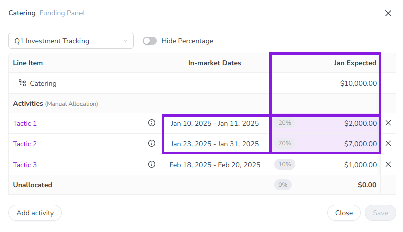

We have adjusted the Uptempo sign-in process to provide a better user experience, in particular for organizations that use Single Sign-On (SSO). In the past, if you tried to sign in to Uptempo while you still had an active session (for example, because you are already logged in to your SSO service), you were taken to a page that said that you were already signed in. To streamline the sign-in process, we have eliminated this page: now, if you sign in to Uptempo with an active session, you'll simply be redirected to the Uptempo application immediately.
Administration
User experience enhancements in the User List
To improve the user experience for Uptempo administrators, we've implemented some tweaks in the User List:
Sort by status: The Status column in the User List is now sortable. As an administrator, you can use this capability to more easily find deactivated or locked user accounts to restore their access.
Last Activity is now Last Login: Until now, the timestamp in the Last Activity column of the User List indicated the last date on which there was any modification to the user account itself (such as a change in the account's status or profile information). To make this data more useful to administrators, we have renamed the column to Last Login, and the timestamp now records the date each user last successfully signed in. As a result, it's now much simpler to identify and remove inactive accounts.
Administrators can now deactivate Key Performance Indicators (KPIs) when they're no longer relevant.
Deactivated KPIs are not shown on newly created activities, but remain visible on all previously created activities. This lets you evolve the way you track the performance of activities over time, without losing historical data. And, if you decide to start tracking a retired KPI again later, you can reactivate it at any time.
As part of this release, we've also added a few new capabilities to help administrators manage KPIs: you can now change the display order of KPIs, and there is also a new search function to make it easier to find specific KPIs in the list.
In the Impact Modeller, you can now track revenue for each funnel stage to get more insights into the pipeline created by your lead generation. Administrators can turn on revenue tracking for any stage in the funnel, and set a custom label for any stage's revenue (such as "Pipeline", "Bookings", etc.). When revenue tracking is turned on for a funnel stage, stage-specific revenue is reflected in the Impact section of each activity's details panel:
Planned tab: The funnel chart (under Show Funnel Assumptions) shows revenue projections (and the custom revenue labels) for each stage where they are enabled, in addition to the existing projection shown on the final stage:
Actual tab: The input table for actuals now features columns (also using the custom revenue labels, and marked with the relevant currency symbol) where you can enter stage-specific revenue.
In the Timeline display mode, you can now color-code the activity bars to visually identify activities.
Administrators can configure Color By Attribute on any Drop-Down List attribute by assigning a color to each attribute option.
On the Timeline, users can select an attribute where Color By Attribute is set up with the new Color by control, and the activity bars change color according to the option set on each activity.
The Color By Attribute feature helps to visually declutter the Timeline, and makes it easier for users to interpret the visible activities at a glance.
Connect multiple investments to an activity in a single step
Connecting multiple Financial Management investments to a Campaign Management activity is now faster and easier. Similar to the enhancement we made on the Financial Management side in last month's release, when you connect investments to an activity from the Campaign Management side, you can now select multiple investments and connect them all to the activity with a single click.
We've redesigned the controls for configuring columns in the Summary display mode. The number of available columns has increased with recent releases, so we've made some improvements to make it easier to navigate the longer list of available columns. Highlights of the redesign include:
Separate list of visible columns: Columns that are selected to be displayed in the table are now shown in their own, separate list. This lets you see at a glance which columns are currently visible, and quickly make changes.
Grouping and search: Finding the exact column you want just got easier: the list of available columns is now organized into column groups that have their own subheadings, and there's also a search function to find columns by keyword.
Pinned columns: You can now "pin" up to 3 columns. Like the fixed Activities column, pinned columns always remain visible when you scroll the Summary table side-to-side.
When you use display settings (such as filters and groupings) to customize which activities are shown in the Activity Hierarchy, you can now save these settings as views.
After you save a view, you can select it from the new Views menu in the Timeline and Summary to apply the same display settings with just one click.
Any user with access to the Activities section can create their own personal views that aren't visible to other users, either from scratch or by copying an existing view. Administrators can additionally create views that can be used by all users in their organization.
View inherited attribute values in activity details
For any activity, you can now see exactly which attributes it has inherited from activities above it in the hierarchy, and what their values are. In Uptempo, activities have both their own attributes, and attributes that they "inherit" from their ancestor activities (parents, grandparents, etc.). Whenever you view any activity, the activity's Details section now also lists every ancestor activity from which attributes are being inherited: expand any listed ancestor activity to see all the attributes inherited from it, along with their values.
The Activity Funding Panel now displays calculated columns. Previously, if a Financial Management View contained calculated columns, these columns weren't visible when allocating funds from investments to connected activities. Now, if you select a View in the Activity Funding Panel that includes calculated columns, those columns are shown in the panel. Just like elsewhere in Uptempo Financial Management, calculated columns in the Activity Funding Panel are marked with a Calculated icon by their column name, and their contents can't be edited.
Automatically distribute funds allocations between connected activities
You can now configure specific Uptempo Financial Management columns to automatically distribute funds between connected activities.
The new Auto Distribution feature eliminates the need to do manual data entry for allocations — especially for funds amounts imported into Uptempo from integrations (such as Committed and Actual amounts). When Auto Distribution is configured for a Financial Management column, the system will automatically allocate the line item amount in that column to connected activities in the same proportions as a specified reference column. For example, if a line item's funds in the "Expected Spend" column are split 70/30 between two activities, and you set this column as the reference for the line item's "Actual Spend" column, any amount entered in the "Actual Spend" column will also be automatically split 70/30 between the same two connected activities.
In conjunction with Auto Distribution, we've also added a UX enhancement to the Activity Funding Panel: now, if a Date Range is set for a Financial Management column, cells where the column's date range overlaps with a connected activity's in-market dates are highlighted with a colored background to show at a glance where funds need to be allocated. 


{kind=link}
{kind=link}
{kind=link}
{kind=link}
{kind=link}
{kind=link}
{kind=link}